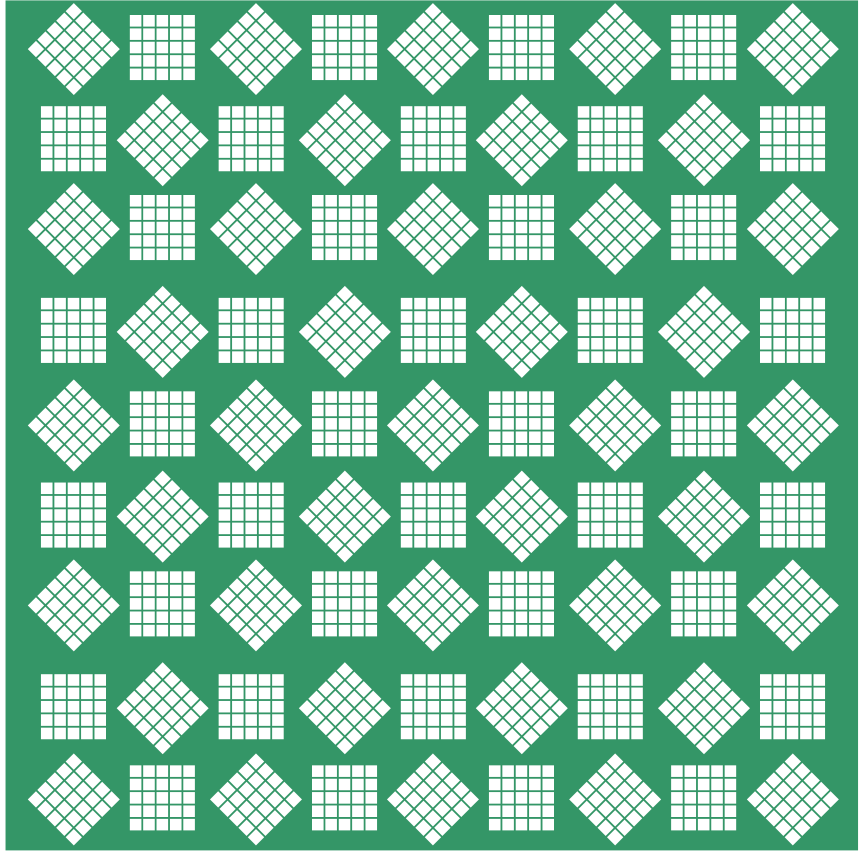

Which of the following numbers are not perfect squares?
(i) 2032 (ii) 2048 (iii) 1027 (iv) 1089
Which one among \(64^2\), \(108^2\), \(292^2\), \(36^2\) has last digit 4?
Given \(125^2 = 15625\), what is the value of \(126^2\)?
(i) \(15625 + 126\) (ii) \(15625 + 26^2\) (iii) \(15625 + 253\)
(iv) \(15625 + 251\) (v) \(15625 + 51^2\)
Find the length of the side of a square whose area is 441 m\(^2\).
Find the smallest square number that is divisible by each of the following numbers: 4, 9, and 10.
Find the smallest number by which 9408 must be multiplied so that the product is a perfect square. Find the square root of the product.
How many numbers lie between the squares of the following numbers?
(i) 16 and 17 (ii) 99 and 100
In the following pattern, fill in the missing numbers:

\(1^2 + 2^2 + 2^2 = 3^2\)
\(2^2 + 3^2 + 6^2 = 7^2\)
\(3^2 + 4^2 + 12^2 = 13^2\)
\(4^2 + 5^2 + 20^2 =\) (___)\(^2\)
\(9^2 + 10^2 +\) (___)\(^2\) = (___)\(^2\)
How many tiny squares are there in the following picture? Write the prime factorisation of the number of tiny squares.

Chapter 1 · A Square and a Cube